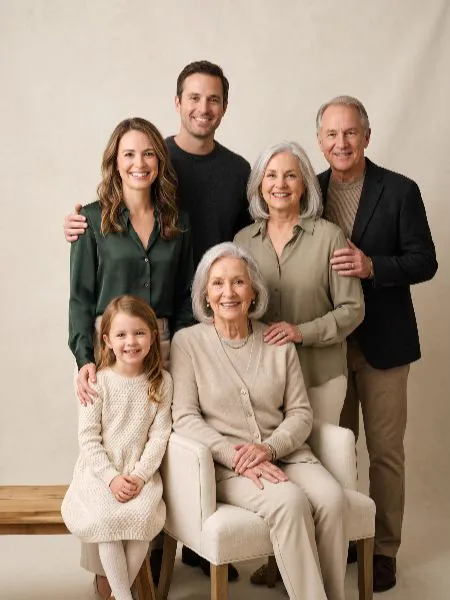
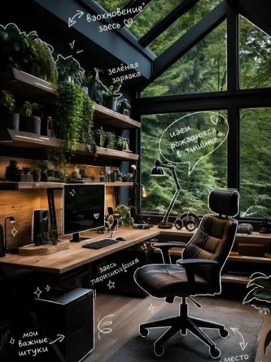

AI Photos in Telegram for you, business and ideas
Recreate a beautiful look with your own face, restore an old photo, do an AI photoshoot or make a product card — no complicated software or extra settings.
No prompts — if you don't want to. With your own prompt — if you're a pro.
AI Photo Examples
Pick a ready-made example and recreate it with your own appearance. Create a portrait, avatar, photoshoot, product visual, restore an old photo or generate an image from your own prompt.
What You Can Do
Recreate a Beautiful Look
Saw a stunning AI image — make one just like it with your own face.
Pick a LookDo an AI Photoshoot
Get a series of photos in different styles without a studio, photographer or lengthy prep.
Browse LooksCreate a Product Card
Turn an ordinary product photo into a clean visual for a marketplace, website or ad.
Create CardMake an Avatar or Portrait
Create a profile picture, business portrait or bright avatar for social media.
Create AvatarWrite Your Own Prompt
Create an image from your own idea and submit it to the sandbox for voting.
Create from Prompt...and other photo tasks — inside Telegram
How It Works
Pick an Example
The gallery and Telegram forum are full of ready-made looks, styles and scenarios.
Tap "I Want This Too"
The bot will open the right scenario automatically.
Upload a Photo and Get the Result
The service creates your version of the image right inside Telegram.
Trending Now
AI Photoshoot in Glossy Magazine Style
Professional photos without a studio
Try It →
Old Family Photo Restoration
Restoration, color, quality improvement
Try It →
Product Card for Marketplaces
Make your product photo cleaner, pricier and more eye-catching
Try It →Cinematic Portrait
Portrait in cinema, retro or glossy photography style
Try It →Profile Photo for Telegram
Avatars for social media and Telegram
Try It →
Own Prompt in the Sandbox
Create ideas and submit them for voting
Try It →AI Visuals for Products, Ads and Social Media
The service helps you quickly prepare images for product cards, promos, banners, posts and visual ideas — right inside Telegram.
Product Card
Product Photography
Ad Visual
Social Media Content
Know How to Write Prompts?
Create Your Own Scenarios
Generate an image from your own prompt and submit it to the sandbox. If users like the idea, it can be added to the public catalog, and the creator receives bonuses for usage.
You Decide What to Do with the Result
After generation you can save the image, regenerate, delete or publish it. Nothing is published without your choice.
Save
Regenerate
Delete
Publish
Questions and Answers
Do I need to know how to write prompts?
Where does the generation happen?
Can I create product photos?
Can I restore an old photo?
Are my photos published automatically?
What is the Sandbox?
Does the creator get bonuses?
Can I create an image from my own prompt?
Can I do an AI photoshoot?
Is the service suitable for business?
Try Creating Your First AI Photo in Telegram
Pick a ready-made look or start with your own prompt.